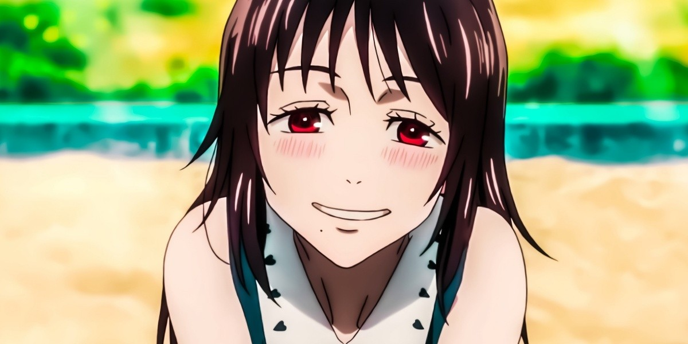

Yuuta Okkotsu, protagonista de Jujutsu Kaisen 0, es considerado uno de los personajes más poderosos del universo Jujutsu. Su evolución a lo largo de la película lo convierte en un caso de estudio fascinante.
Habilidades principales
- Rika Orimoto: Espíritu maldito de grado especial que actúa como su aliada. 
- Técnica de Copia: Puede replicar cualquier técnica que haya visto previamente.
- Reserva ilimitada de energía maldita: Le permite combatir durante largos periodos.
Comparativa de poder
| Personaje | Nivel | Habilidad destacada |
|---|---|---|
| Yuuta Okkotsu | Grado especial | Invocación de Rika |
| Gojo Satoru | Grado especial+ | Infinito |
Conclusión
Yuuta representa un excelente ejemplo de desarrollo de personaje, pasando de ser un estudiante inseguro a uno de los hechiceros más poderosos.